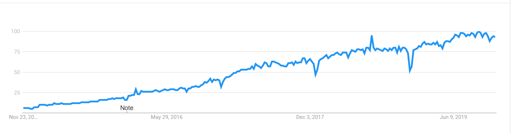
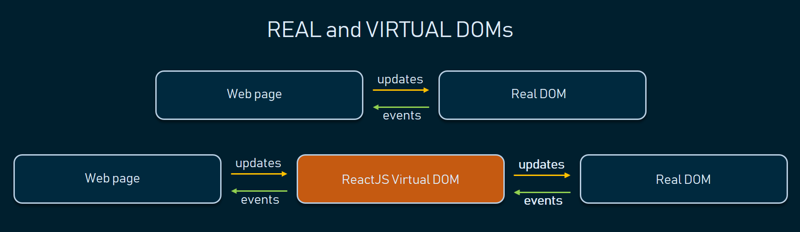

React.js
Created by Olga Zbanok
What is React ?
React is a JavaScript library - one of the most popular ones, with over 100,000 stars on GitHub.
 React JS Popularity in the last 5 years by Google TrendsWhat is React ?
- React is an open-source project created by Facebook in 2013
- React is used to build user interfaces (UI) on the front end.
- React is not a framework (unlike Angular, which is more opinionated).
- React is the view layer of an MVC application (Model View Controller)
React Core Concepts
- Virtual DOM
- JSX
- Components
- Props
- State
- Lifecycle
Virtual DOM
Virtual DOM

JSX
- JSX stands for JavaScript XML
- JSX allows us to write HTML in React
- JSX makes it easier to write and add HTML in React
const element = Hello, world!
;
ReactDOM.render(element, document.getElementById('root'));Important rules about JSX:
- one top level element
const myelement = (
Hello,
world
);const name = 'Josh Perez';
const element = Hello, {name}
;Components
Functional Component
| as JS function | |
| as ES6 arrow function | |
- is a JavaScript / ES6 function
- must return a React element
- take props as parameter if necessary
React introduced React Hooks in version 16.8, which now allows to use state & other features in functional components.
Class Component
import React, { Component } from 'React';
class Example extends Component {
render() {
return (
This is an example component.
);
}
}
export default Example;- is an ES6 class
- can accept props (in the constructor) if needed
- can maintain its own data with state
- must have a render( ) method which returns a React element (JSX), or null
Props
- Props stand for properties and is a special keyword in React
- Props are being passed to components like function arguments
- Props can only be passed to components in one-way (parent to child)
- Props data is immutable (read-only)
State
- The state object is initialized in the constructor
class MyClass extends React.Component
{
constructor(props)
{
super(props);
this.state = { attribute : "value" };
}
}this.setState({attribute: "new-value"});LIFECYCLE

Pros of ReactJS
- Virtual DOM in ReactJS makes user experience better and developer’s work faster
- Permission to reuse React components significantly saves time
- One-direction data flow in ReactJS provides a stable code
- An open-source Facebook library: constantly developing and open to the community
- Wide React toolset
Cons of ReactJS
- High pace of development
- Poor documentation
- ‘HTML in my JavaScript!’ – JSX as a barrier
- Additional SEO hassle